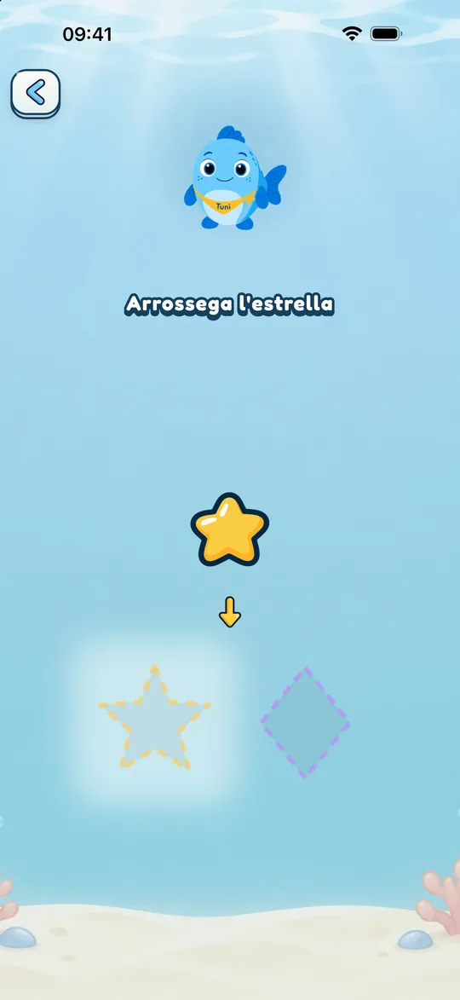
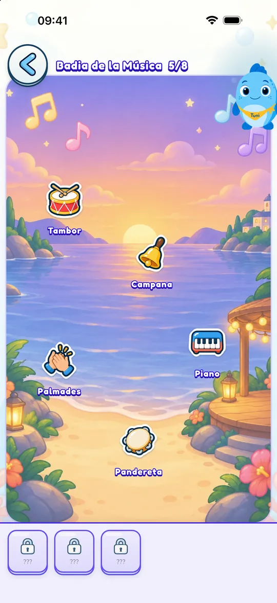
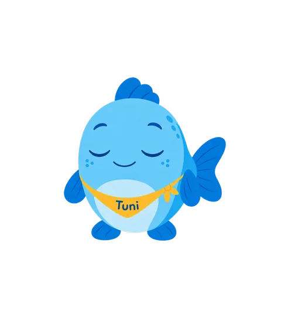
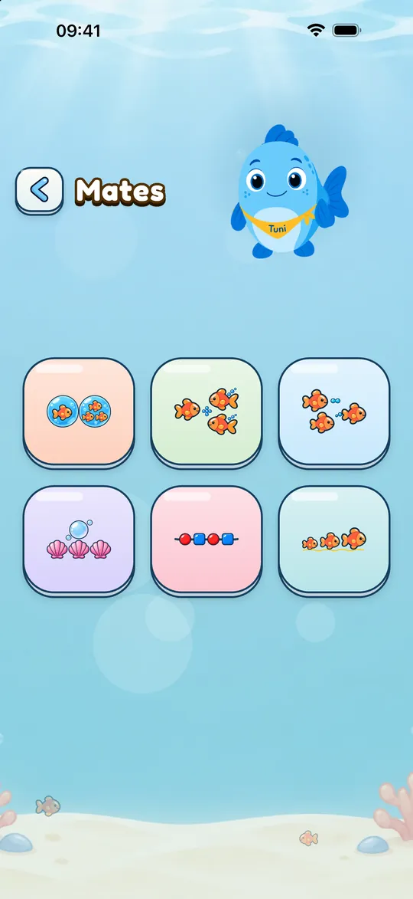

Per a famílies
Així és Mundo Tuni per dins
El que fa la criatura quan juga, el que pots ajustar tu i el que passa amb les seves dades.
Una visita a Mundo Tuni
El menú agrupa els mons. La criatura en tria un i veu una graella amb els seus elements: els números, les lletres, els colors… Quan en toca un, en Tuni el presenta i comença una sèrie de jocs curts.
Quan els acaba, guanya una estrella (i, als sis mons principals, un adhesiu) i torna a la graella amb l’estrella nova a la vista.

Al seu ritme, sense pressa
A Mundo Tuni no hi ha ratxes, comptes enrere ni finestres que interrompin el joc. En Tuni anima i explica, però no apressa.
La dificultat s’ajusta a la franja d’edat que triïs: Petits (2 anys), Mitjans (3) o Grans (de 4 a 6).

Temps de joc amb un final tranquil
Per defecte no hi ha límit. Si l’actives a la zona per a adults (5, 10 o 15 minuts de joc actiu), quan arriba l’hora, en Tuni acaba el joc, s’acomiada i proposa una idea per continuar sense pantalla.
Si vols que continuï una mica més, un adult ho pot permetre.

La nostra postura sobre les pantalles
Moltes apps infantils estan fetes perquè costi parar: reproducció automàtica, premis freqüents, anuncis. L’Acadèmia Americana de Pediatria ho assenyala a la seva política del 2026 i afegeix que això queda en bona part fora del control de les famílies. Mundo Tuni s’ha fet al revés: sense anuncis, sense connexió, sense ratxes ni comptes enrere, amb un temps de joc que podeu fixar i un final tranquil.
El que recomanen les guies: la guia de la Generalitat desaconsella totalment les pantalles fins als 3 anys i, de 4 a 6, proposa un màxim orientatiu de 30 minuts alguns dies, sempre amb un adult, i recomana no fer servir el dispositiu per jugar en aquesta edat; l’AEP recomana evitar-les fins als 6 anys perquè no hi ha un temps segur. Ho expliquem tal com és. I per a quan una família decideix fer-ne servir, demanen acompanyar l’infant, triar continguts tranquils i no fer servir la pantalla per calmar-lo ni com a recompensa.
Mundo Tuni no substitueix jugar amb vosaltres.

Català, castellà i anglès
Pots triar l’idioma de joc en començar o canviar-lo en qualsevol moment. El castellà té veu d’Espanya i d’Amèrica Llatina.
Al racó de la Lola, qui juga en català o castellà aprèn 24 paraules en anglès americà; qui juga en anglès, en castellà. Pots amagar aquest racó.

Mates per als grans
Per a la franja de 4 a 6 anys hi ha un món de matemàtiques amb sis jocs: comparar quantitats, sumar i restar amb objectes, comptar enrere, continuar seriacions i ordenar per mida o per llargada.
Treballa amb quantitats fins a 10. No és un curs d’operacions escrites.

La zona per a adults
Per entrar-hi cal resoldre un repte matemàtic pensat per a adults, que canvia segons la franja d’edat. A dins hi ha el seu progrés i la configuració.
- Progrés per món i per concepte, sense comparacions
- Temps de joc, idioma i franja d’edat
- Subtítols d’en Tuni i ajuda per al daltonisme
- Restaura les compres

La seva privadesa
Mundo Tuni no demana el nom, la data de naixement ni un compte de l’infant. El progrés es desa al teu dispositiu i no s’envia a ningú.
Les compres les gestiona RevenueCat amb un identificador tècnic pseudònim, sense el teu nom ni el teu correu. Si un adult activa el micròfon per repetir paraules amb la Lola, la veu es grava un moment al dispositiu, es reprodueix i s’esborra. Si l’app es tanca a mitges, s’esborra quan es torna a obrir. No s’envia mai.


Prova-la de franc
Descarrega-la per a la criatura i proveu junts el contingut gratuït de cada món. Si us agrada, podeu desbloquejar la resta dins de l’app.